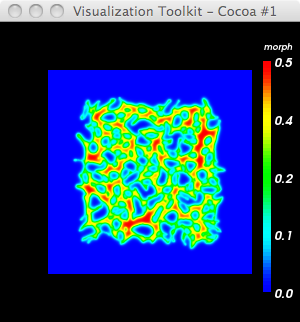
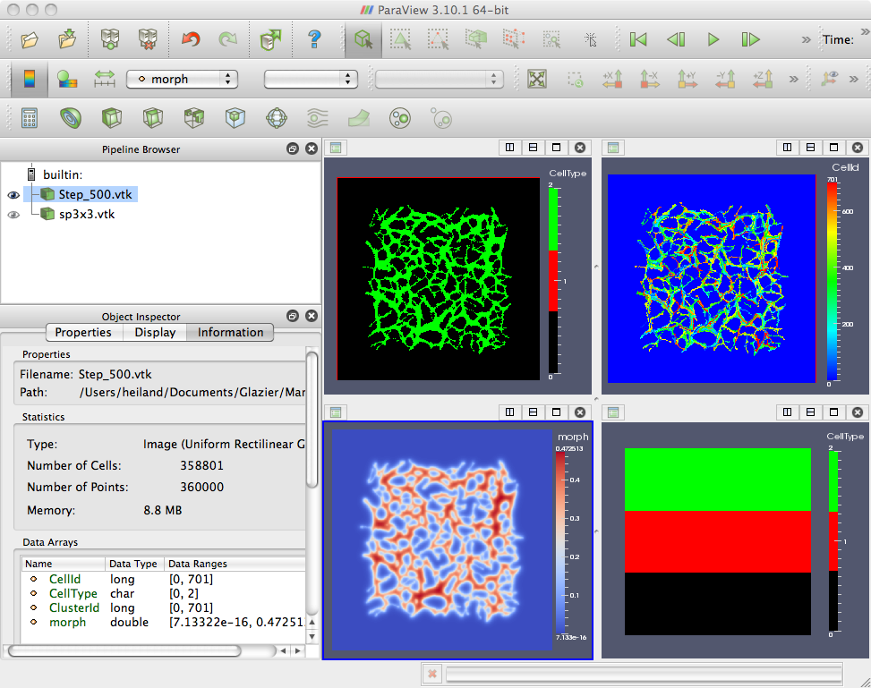

Here is the basic layout of the .vtk file - it consists of 4 fields (CellType, CellId, ClusterId, morph):
# vtk DataFile Version 3.0 vtk output ASCII DATASET STRUCTURED_POINTS DIMENSIONS 600 600 1 SPACING 1 1 1 ORIGIN 0 0 0 POINT_DATA 360000 FIELD FieldData 4 CellType 1 360000 char 1 1 1 1 1 1 1 1 1 ... CellId 1 360000 long 701 701 701 701 701 701 701 701 701 ... ClusterId 1 360000 long 701 701 701 701 701 701 701 701 701 ... morph 1 360000 double 2.28707e-14 2.35005e-14 2.47739e-14 2.67193e-14 ...
Regarding the desire to specify the frequency that .vtk files are written (i.e. freqency = every Nth mcs, where N is different than the image/screen dump frequency), the following hack is a temporary solution. However, this only works for cc3D run with the GUI (not using the batch script, runScript.sh).
edit pythonSetupScripts/CompuCellSetup.py:
def mainLoopNewPlayer
...
screenshotFrequency = simthread.getScreenshotFrequency()
latticeFrequency = simthread.getLatticeOutputFrequency() # or just hard-code, e.g. latticeFrequency = 10
if cmlFieldHandler is not None and (not i % latticeFrequency):
cmlFieldHandler.writeFields(i)
When using the 'runScript.sh' batch script, the "-f" command line option allows the user to specify the output frequency (defined in core/pythonSetupScripts/CMLParser.py: def processCommandLineOptions)
$ runScript.sh -i Demos/cellsort_rwh.xml -f 5
Here's a Python-VTK script to read the .vtk file and render the morph field:
$ cat parseVTK.py
#!/usr/bin/env python
import vtk
import sys, string
argc = len(sys.argv)
print 'argc=',argc
if argc < 2:
print 'Usage: ',sys.argv[0],' <filename>'
raise ValueError, 'Too few input args'
#nsteps = string.atoi(sys.argv[1])
fname = sys.argv[1]
# I can't stand the default red->blue; make a blue->red LUT
lutBlueRed = vtk.vtkLookupTable()
lutBlueRed.SetHueRange(0.667,0.0)
lutBlueRed.Build()
ren1 = vtk.vtkRenderer()
renWin = vtk.vtkRenderWindow()
renWin.AddRenderer(ren1)
iren = vtk.vtkRenderWindowInteractor()
iren.SetRenderWindow(renWin)
reader = vtk.vtkDataSetReader()
reader.SetFileName(fname)
reader.Update()
aa = vtk.vtkAssignAttribute()
aa.SetInputConnection(reader.GetOutputPort())
aa = vtk.vtkAssignAttribute()
aa.SetInputConnection(reader.GetOutputPort())
#aa.Assign("CellType", "SCALARS", "POINT_DATA")
#aa.Assign("CellId", "SCALARS", "POINT_DATA")
#aa.Assign("ClusterId", "SCALARS", "POINT_DATA")
aa.Assign("morph", "SCALARS", "POINT_DATA")
aa.Update()
srange = aa.GetOutput().GetScalarRange()
print ' range: ',srange
mapper = vtk.vtkDataSetMapper()
#mapper.SetInputConnection(reader.GetOutputPort())
mapper.SetInputConnection(aa.GetOutputPort())
mapper.ScalarVisibilityOn()
mapper.SetScalarRange(srange)
mapper.SetLookupTable(lutBlueRed)
actor = vtk.vtkActor()
actor.SetMapper(mapper)
#actor.GetProperty().SetInterpolationToFlat()
#actor.GetProperty().SetInterpolationToGouraud()
#actor.GetProperty().SetInterpolationToPhong()
#------------------------
scalarBar = vtk.vtkScalarBarActor()
scalarBar.SetLookupTable(lutBlueRed)
scalarBar.SetTitle("morph")
scalarBar.GetPositionCoordinate().SetCoordinateSystemToNormalizedViewport()
#scalarBar.GetPositionCoordinate().SetValue(0.8,0.05)
scalarBar.SetOrientationToVertical()
scalarBar.SetWidth(0.1)
scalarBar.SetHeight(0.9)
scalarBar.SetPosition(0.88,0.1)
#scalarBar.SetLabelFormat("%-#6.3f")
scalarBar.SetLabelFormat("%-#3.1f")
scalarBar.GetLabelTextProperty().SetColor(1,1,1)
#scalarBar.GetTitleTextProperty().SetColor(1,0,0)
ren1.AddActor2D(scalarBar)
ren1.AddActor(actor)
renWin.SetSize(300,300)
renWin.Render()
iren.Start()
-->
$ python parseVTK.py Step_500.vtk
argc= 2
range: (7.13322e-16, 0.472513)


ParaView (paraview.org) for a quick & dirty vis of fields (although the CellType colors appear to be incorrect). The bottom-right image is simply a sanity check for a 3x3 field.